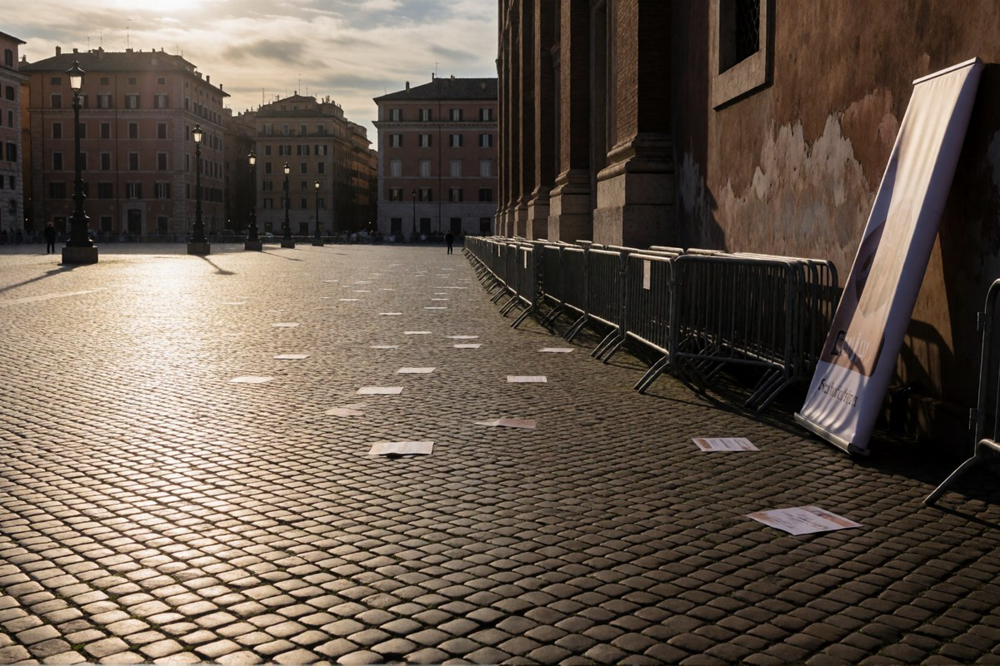

Economia · 20 novembre 2026
Lo sciopero generale che c'era solo sulla locandina

Sul Riformista l'ex segretario della Cisl Raffaele Bonanni contesta allo sciopero del 20 novembre il titolo di generale, perché due sindacati su tre sono restati fuori. Il commento dell'autore, documenti alla mano.
di Franco Zanghì
Uno sciopero si può chiamare generale, se due dei tre grandi sindacati restano a casa?
Venerdì 20 novembre la Cgil di Maurizio Landini, insieme ai sindacati di base, ha fermato il Paese per ventiquattro ore contro la legge di bilancio. E sul Riformista dello stesso giorno Raffaele Bonanni, che per otto anni è stato il segretario generale della Cisl, ha dato la sua risposta già nel titolo: è uno sciopero generale «che c'è solo sulla locandina».
I fatti della giornata
In piazza, secondo la Cgil, sono scese un milione e mezzo di persone in più di cento città: è il numero degli organizzatori, e va preso per quello che è. Landini, dal corteo di Roma, ha detto che la maggioranza ha presentato duemila emendamenti al suo stesso testo, e che quindi i primi a pensare che la manovra «fa schifo» sono loro. Ai cortei c'erano anche Elly Schlein e Giuseppe Conte.
La tesi di Bonanni
Per Bonanni la notizia non è chi c'era in piazza, ma chi non c'era: la Cisl e la Uil. La forza di un sindacato, scrive, «non si misura in decibel e cortei, ma in contratti, salari e risultati». Cisl e Uil, secondo lui, hanno scelto il mestiere più difficile: trattare, con pazienza.
Porta un esempio, l'accordo di San Martino su rappresentanza, salari e contrattazione: un'intesa fra sindacati e imprese per stabilire chi ha titolo a firmare i contratti e per combattere i contratti pirata. Difende anche gli sgravi fiscali sui rinnovi e sui premi di produttività, misure da migliorare e non da liquidare con uno slogan. E avverte: chi usa il sindacato solo per dire di no rischia di ritrovarsi solo, quando la piazza si svuota.
Dove ha ragione
Su un punto Bonanni ha ragione, e un dettaglio lo rende evidente. Come ricorda lo stesso Riformista, il 12 novembre l'accordo di San Martino lo ha firmato anche la Cgil, insieme a Cisl, Uil e tredici associazioni delle imprese. Otto giorni dopo, lo sciopero generale. Firmare un'intesa per costruire regole condivise e una settimana dopo portare lo scontro in piazza è legittimo, ma coerente no. E quando dietro lo striscione sfilano i segretari dei partiti di opposizione, il confine fra sindacato e politica si fa sottile.
Dove andrei più piano
Sull'idea che la piazza conti poco. I numeri della Cgil vanno presi con prudenza, ma chi è sceso in strada lo ha fatto per una ragione vera: stipendi che non tengono il passo dei prezzi. E al governo, che pure sento vicino, direi con amicizia una cosa: se è vero che la maggioranza ha presentato duemila emendamenti alla sua stessa manovra, quello è un argomento regalato all'avversario. Una manovra si scrive bene prima.
Il punto
Bonanni propone un patto nazionale per l'Italia che lavora, con obiettivi da verificare e tempi certi. Non è un'idea nuova, ma è quella giusta. I salari si alzano al tavolo, con la produttività, non sotto le bandiere. La piazza fa rumore per un giorno. Un contratto firmato dura tre anni.
Fonti
- Raffaele Bonanni, editoriale sul Riformista, 20 novembre 2026
- Il Riformista, la cronaca della giornata di sciopero e il richiamo alla firma dell'accordo di San Martino del 12 novembre 2026
- Cgil, i dati sulla partecipazione allo sciopero generale del 20 novembre 2026 (cifre degli organizzatori)
- Dichiarazioni di Maurizio Landini dal corteo di Roma, 20 novembre 2026
- Accordo interconfederale su rappresentanza, salari e contrattazione firmato il 12 novembre 2026 da Cgil, Cisl, Uil e tredici associazioni d'impresa
È un editoriale: contiene valutazioni dell'autore, distinte dai fatti riportati. La tesi sullo sciopero «solo sulla locandina» è di Raffaele Bonanni e non dell'autore. Le cifre sulla partecipazione sono della Cgil e non sono confermate da fonti terze. Testata e firma dell'articolo riferito: Raffaele Bonanni sul Riformista del 20 novembre 2026.